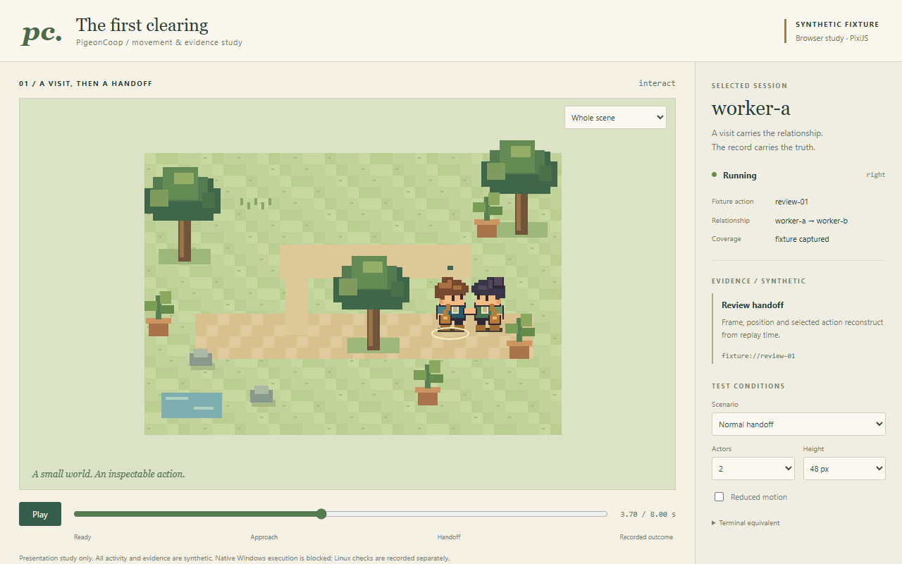
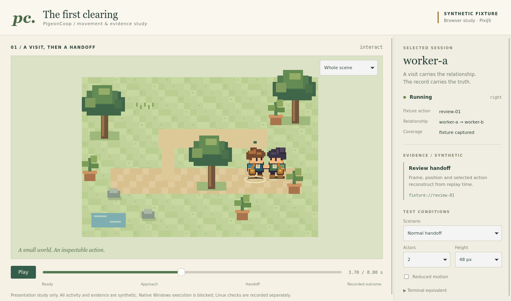
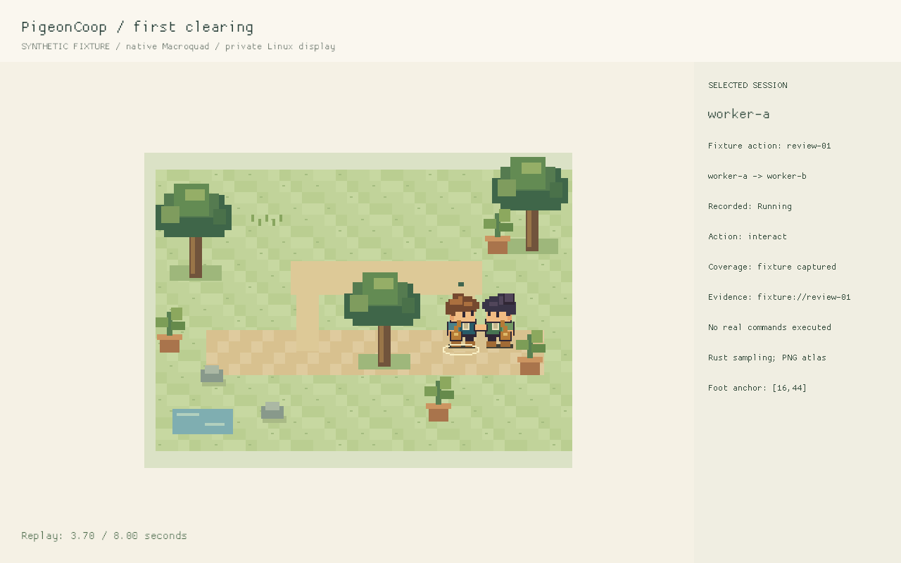
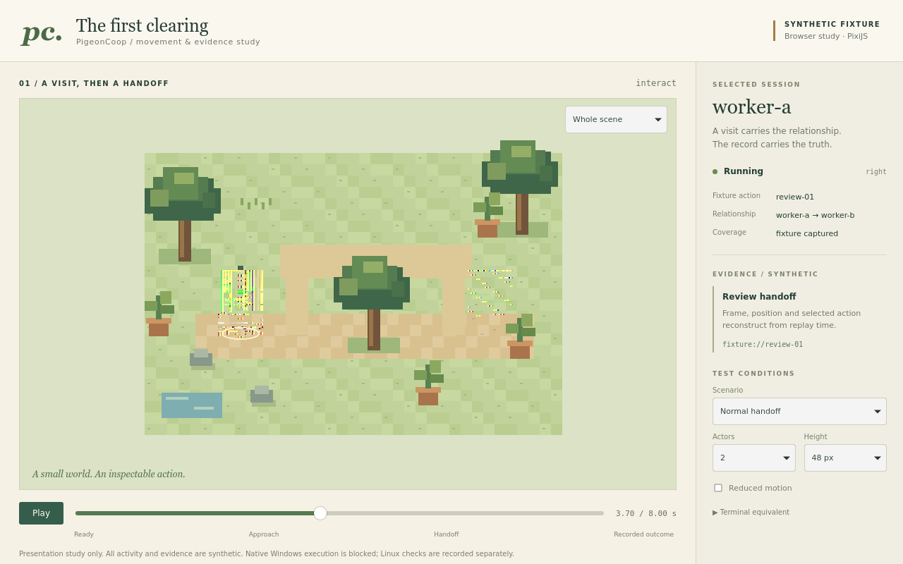
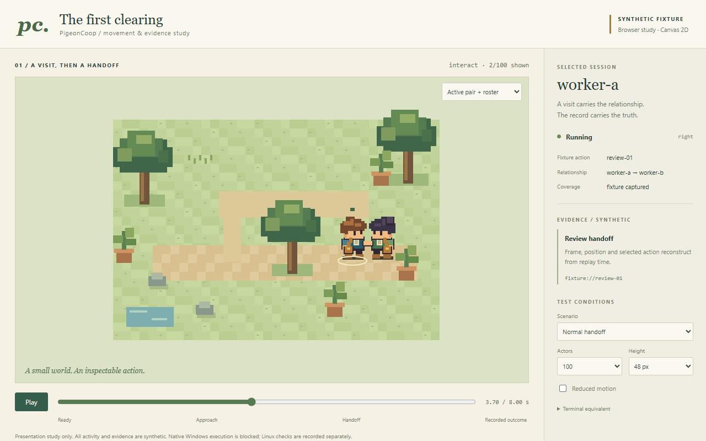
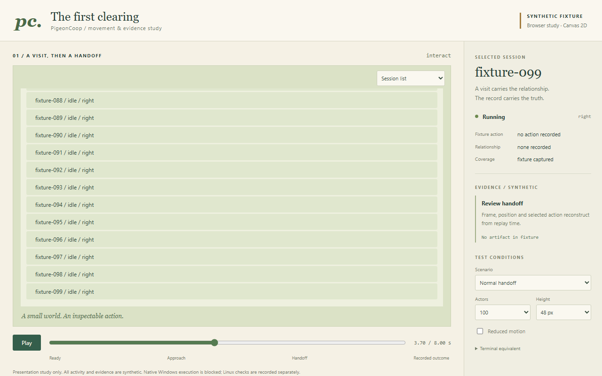
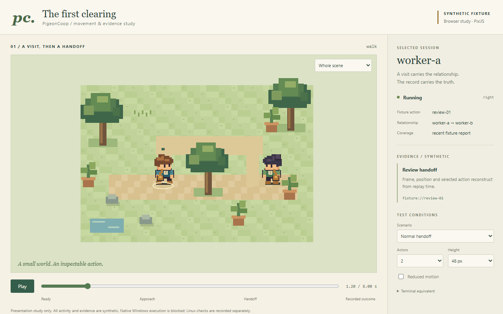
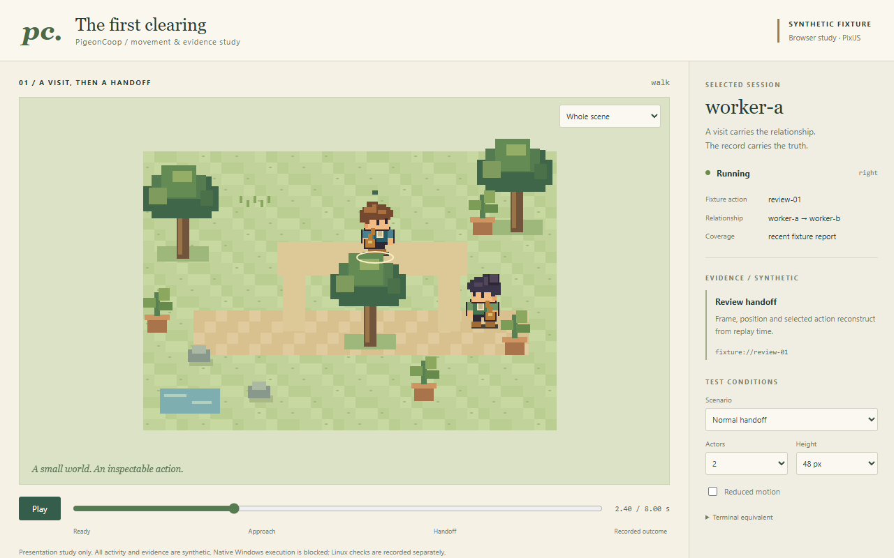
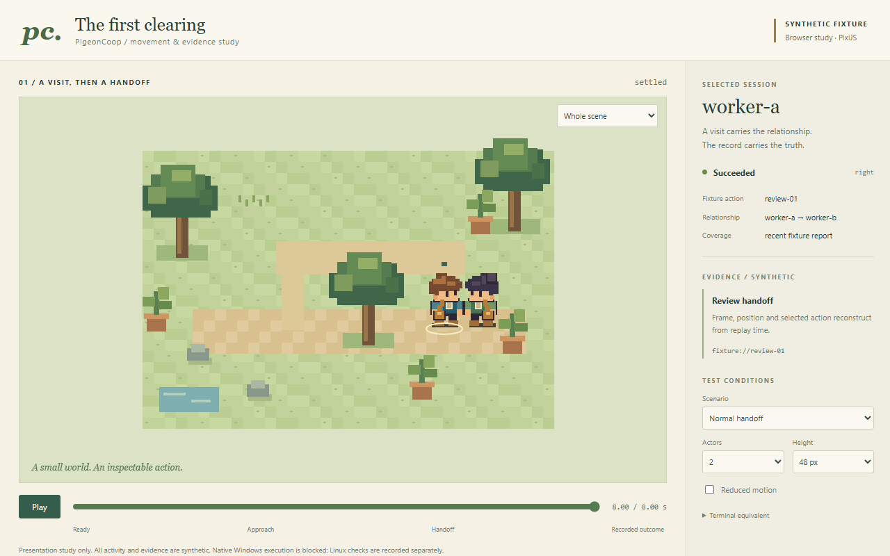

October 27, 2026 · bounded synthetic experiments · all visual checks hidden
HTML/React + PixiJS Canvas, with one deterministic Rust presentation core compiled to WASM for browser/Tauri. Keep the recorder/CLI headless and viewers optional. Keep assets in renderer-neutral PNG + JSON.
Recommended Pixi Canvas submissions were about 1.4–2.9 ms at p95, including the Rust/WASM and packed-atlas path. Shared Rust sampling, real editor batch exports, packed-sheet registration, native Linux drawing, Linux Tauri and CLI-to-browser detach/reconnect have working evidence. The WebKit/software Pixi WebGL configuration visibly fails and remains a recorded failure.
Recommendation, not release approval: native Windows executables/WebView2 remain blocked or unverified. WSL/Xvfb is software graphics, not physical Linux hardware qualification. Final character directions and dense layouts need design work.
Full verdict, measurements, alternatives and remaining gates · Atlas pixel conformance







headless browser attachment">
